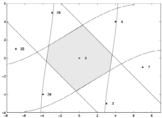

Fast Multiple Antenna Differential Decoding
Kenneth L. Clarkson
Wim Sweldens
Alice Zheng

Abstract: We present an algorithm based on lattice reduction
for the fast decoding of diagonal differential modulation across
multiple antenna. While the complexity of the maximum likelihood
algorithm is exponential both in the number of antenna and the rate,
the complexity of our approximate lattice algorithm is polynomial in
the number of antennas and the rate. We show that the error
performance of our lattice algorithm is very close to the maximum
likelihood algorithm.
Status:
IEEE Trans. Commun., Vol.\ 49, Nr.\ 2, pp. 253-261, 2001
Dates:
| June 2000:
|
Revised version with expanded LLL section.
| October 1999:
|
| Initial posting.
| October 1999:
|
| Submitted.
|
Download: PDF v3.0 (.pdf) (149K).
Note: This paper can be seen as a follow-up of an earlier
paper on "Differential Unitary Space-Time
Modulation".